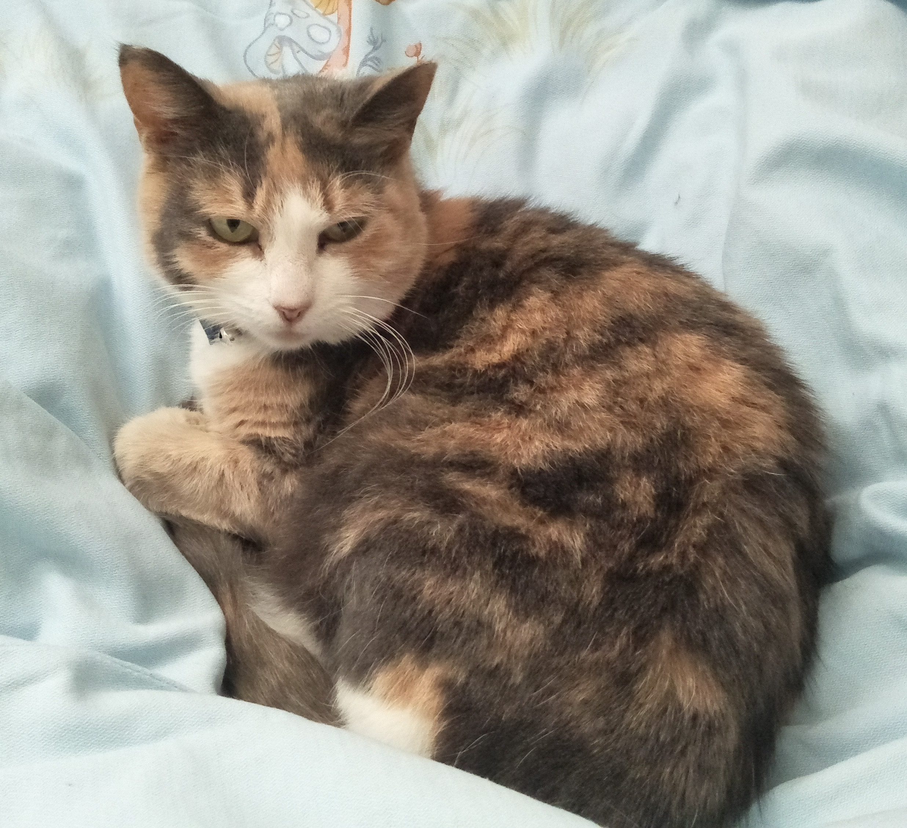

My Profile
Emma Sun
S3812428
emmmasun@hotmail.com
Current qualifications:
Bachelor of Biomedicine Majoring in Cell and Developmental Biology
WWCC, RSA, Police check, Cert II in Hospitality and Tourism.
In progress:
Bachelor of Information Technology
Australian born Chinese, 1/4 Manchurian and I can speak English, Shanghainese and Mandarin. Descendent of minor royalty - my great grandfather was a high ranking military officer during the last Qing dynasty.
My mum makes the best food and makes a lot of traditional Chinese food like steamed buns, dumplings, wontons etc. My dad is an electrician and handyman who can fix anything and does all the repairs in the house. I have an older brother who is 15 years older than me and also have two nieces who are little devils at the moment.
I have a pet cat called Sprinkles who is 7 years old and turning 8 this year in December. I am also mildly allegic to Sprinkles. In fact, I am mildly allergic to many things including but not limited to: cats, rabbits, guinea pigs, dust mites rye grass, watermelon, rockmelon, honeydew, lychee, longan, avocado (no smashed avo on toast soz), banana etc etc.
In my spare time I like to play some computer games to pass the time - mostly Path of Exile and League of Legends. I built my current desktop computer specifically to be able to enjoy nicer graphics for Path of Exile (compared to my laptop that I used to run it on). If I can be motivated enough, I like doing arts and crafts projects and have made some impressive swords and props if I do say so myself.